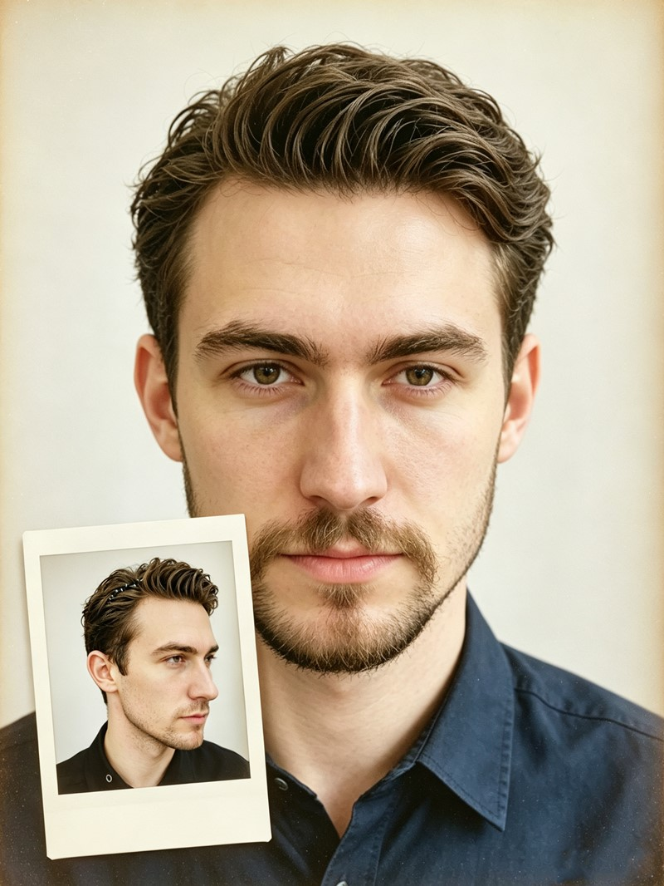
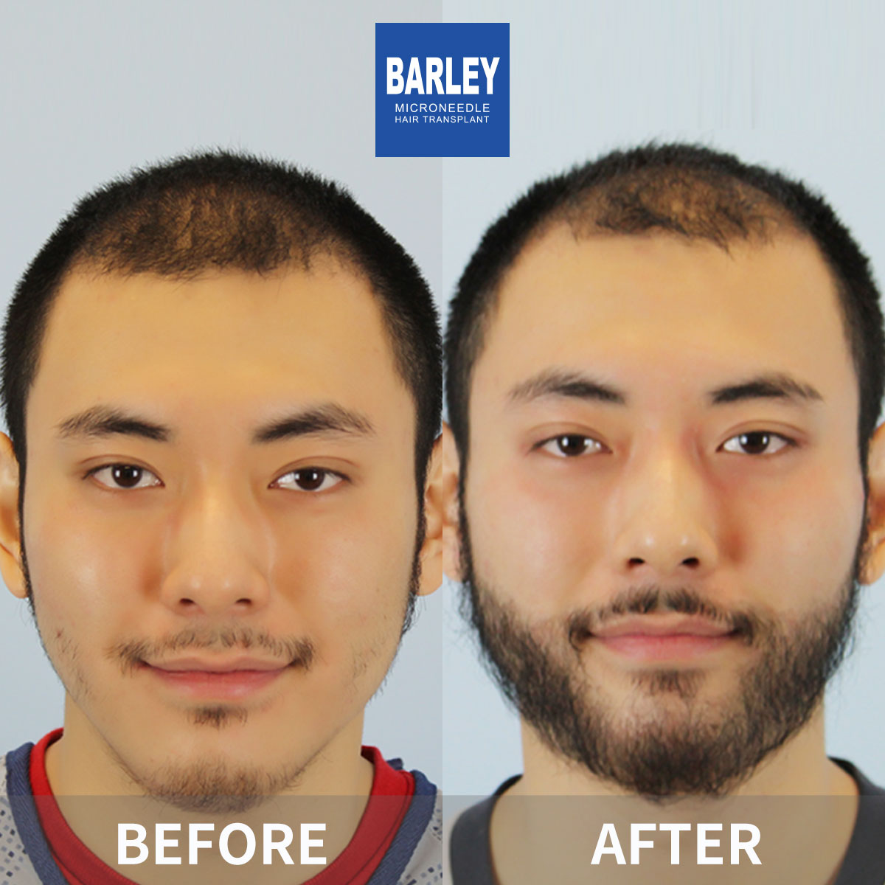

Restore facial symmetry with permanent, natural-looking sideburns

A sideburns transplant is a specialized FUE procedure that restores missing or thin sideburns by transplanting healthy follicular units from your donor area to the sideburn region. The result is permanent, natural-looking facial hair that grows just like your natural sideburns.
Whether you have patchy sideburns, thin growth, or genetics that prevent facial hair development, this procedure creates the full, even sideburns you've always wanted.
Identify your concerns and discover our solutions
Patchy or uneven sideburns that won't grow in
Unable to grow sideburns no matter what you try
Scars disrupting your sideburn line
Thin, wispy sideburns lacking density
Asymmetrical sideburns affecting facial balance
Fill gaps for uniform, full-looking sideburns
Create permanent facial hair your genetics didn't provide
Transplant healthy follicles directly into scar tissue
Build dense, masculine sideburns with thick grafts
Design perfectly symmetrical sideburns for facial harmony
Choose the perfect style to match your facial features
Complete coverage from hairline to jawline. Bold, masculine look with full density.
500-800 grafts Full densityLonger sideburns extending further down the cheek. Refined, distinguished style.
600-1,000 grafts Extended lengthSubtle, groomed appearance for men who prefer a polished, refined look.
300-500 grafts Subtle styleSeamlessly connect with beard or mustache for unified facial hair enhancement.
400-700 grafts Beard connectionTypical graft counts for each sideburn style (per side)
Complete coverage from hairline to jawline with full density
Longer sideburns extending further down the cheek
Subtle, groomed appearance for a polished look
Seamless connection with beard or mustache
Note: Actual graft requirements depend on your desired density, treatment area size, and existing facial hair. Get a precise estimate during your free consultation.
Where artistry meets precision for natural-looking results
We design your ideal sideburn shape directly on your face for approval
Select thickest, most robust follicles for masculine character
Replicate natural growth patterns with meticulous precision
Layered approach: denser at top, lighter toward bottom
Verify even density and balanced coverage across both sides
Trusted by thousands of men worldwide for natural facial hair restoration
Custom sideburns design tailored to your face shape and personal style
Precision microneedle tools for minimal trauma and natural results
Industry-leading graft survival with proven track record
Custom-designed sideburns transplants using precision FUE technology for natural, lasting results

Full, well-defined sideburns are a symbol of confidence and masculinity that many men want but genetics doesn't always allow. Our sideburns transplant procedure can create the full, even facial hair you've always wanted — permanently. Using your own hair follicles, we build natural-looking sideburns that grow, can be shaved, and blend perfectly with any existing facial hair.
Tailored to your face shape
Your real facial hair, forever
Groom it just like natural hair
Undetectable, authentic results
From your first consultation to full, natural-looking sideburns
We map out your ideal sideburns shape directly on your face for your approval
We extract thick, healthy follicles from the back of your scalp using FUE
Each graft is carefully sorted and prepared for optimal facial hair placement
Follicles are implanted at the exact natural growth angle for the sideburns area
We verify even density and balanced coverage across all treated areas
Comprehensive recovery guidance and 12-month growth monitoring
The reasons men from around the world choose Barley for their sideburns restoration
Because the transplanted hair is your own, it behaves exactly like natural facial hair. Shave it clean, grow it out, trim it to your preferred length, or shape it with a comb — the hair grows continuously just like real sideburns and requires the same regular grooming. That's exactly what you want from an authentic result.
Facial hair growth is far more complex than scalp hair. Sideburn hair typically grows downward and slightly backward. Our surgeons replicate this directional pattern with precision, creating sideburns that grow exactly as nature intended — never looking obviously transplanted.
We specifically select the thickest, most robust follicles from your donor area so your transplanted sideburns have the coarse, dense characteristics of natural facial hair. This careful graft selection is what gives your new sideburns their authentic masculine look and feel — even to the touch.
Industry leader with proven results and global patient trust
Pioneers in microneedle hair transplant technology since 2006
Consistent quality standards across all our locations in major Chinese cities
Proprietary microneedle and implant pen systems for superior, predictable results
Trusted by patients from every corner of the globe
Dedicated English-speaking coordinators from your first inquiry through recovery
State-of-the-art facilities with strict sterilization and safety protocols at every step
See the remarkable transformations our patients have achieved with their sideburns transplants



Moments captured with our satisfied patients

Posing with our medical team after successful procedure

Celebrating fantastic results with our doctors

Another satisfied patient shares their joy

Patient with our specialist before discharge

Happy patient with Dr. Chen post-treatment

Excited patient showing their new look

Patient delighted with their transformation

Patient starting fresh with amazing results
Hear from our satisfied patients around the world
My biggest problem was that my sideburns just stopped about an inch above my jaw and never connected to my beard properly. That gap above my beard line was all I could see in photos. Barley extended both sideburns downwards with 350 grafts per side and tapered the density so it blended instead of looking like two separate things. At month 9 I can wear my beard at any length and you simply cannot tell where the beard ends and the sideburns begin. Exactly what I wanted.
I'm 42 and my sideburns had really receded over the last five years — they started looking thin and high, almost like an old man's temples pushed to the side. Barley rebuilt the whole sideburn frame on both sides with 420 grafts total, recreating the point where the temple curves into the sideburn. Now at 10 months, my face looks younger and more balanced. The shape follows my cheekbone perfectly, which the surgeon actually measured before designing. Little details like that make a huge difference.
I wanted long, sharp sideburns that taper down to my jawline to balance my round face shape. The team drew three different shapes on me first so I could pick the one that suited my face best, then placed 500 grafts per side with a gradual density fade at the edges. I keep my hair at a short 6mm buzz and nobody notices the transplant at all — even my barber thought the new shape was just my normal hair growing in better. Density-wise, it's a perfect match with my native sideburn hair.
I keep my hair at a 3mm buzz cut 12 months a year, so hiding sideburn transplant scarring was my number one worry. Barley used their 0.6mm microneedles and planted one single-hair graft at a time, staggering everything instead of doing neat rows. The donor dots at the back of my head vanished within a week. The transition from sideburn into beard was the tricky part, but at 8 months you cannot draw a line between them, even from 30cm away with a bright lamp. Worth every ringgit.
Was curious about survival rates for sideburns vs scalp, since the face skin is different. 550 grafts total here, and at my 6 month follow-up the surgeon estimated 93%+ survival — basically identical to a regular scalp FUE. The transplanted sideburns grow faster than my old natural ones did, so I trim them more often, which is actually nice because they always look neat and sharp. Survival-wise I have literally zero complaints, and the density is perfect next to my existing hair.
Experience our modern and comfortable facilities

Our state-of-the-art facility

Relax in our premium lounge

Sterile and advanced

Private and professional

Comfortable post-op space

Welcoming entrance
Everything you need to know about sideburns restoration and facial hair transplant
Click to copy contact information
15810155700
+86 13730143529
hairtransplant@qq.com

Everyone's hair loss journey and solution are unique due to a variety of factors. Our hair restoration experts will assist you in determining the root cause and the best solution for your hair restoration plan. If you have any questions, please ask; we are happy to assist.